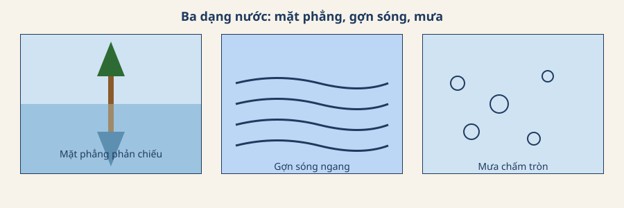

Vẽ nước: sông, biển, mưa — mặt nước phẳng, gợn sóng và phản chiếu
Tác giả: Ruler
Nước là chủ đề khó nhất trong phong cảnh, không phải vì khó vẽ mà vì người mới thường vẽ nước như một vật rắn màu xanh. Nước không có màu riêng. Nước chỉ hiện ra nhờ những gì ở trong nó, những gì nhìn xuyên qua nó và những gì nó phản chiếu. Bài này dạy bạn vẽ ba dạng nước: mặt nước phẳng với phản chiếu như gương, sông và biển với gợn sóng, và mưa trên mặt nước. Bạn dùng lại kỹ thuật ướt trên ướt trong bài "Kỹ thuật loang màu (wet-on-wet): màu chảy, mép mềm, không vệt", kỹ thuật chồng lớp trong bài "Chồng lớp trong suốt (glazing): xây chiều sâu từng lớp mỏng", và quy tắc xa nhạt gần đậm trong bài "Phong cảnh nhỏ: núi, biển, trăng — vẽ từ xa đến gần".

Sơ đồ minh họa được vẽ riêng cho website — không phải ảnh chụp tranh thật. Ba ô: mặt nước phẳng với bóng cây đối xứng, gợn sóng bằng nét ngang cong, mưa bằng chấm tròn nhỏ trên mặt nước.
Nước không có màu riêng
Bạn đừng vội lấy tuýp màu xanh dương khi vẽ nước. Russell Collection viết rằng màu xanh dương trong suốt là nền tảng của tranh nước. Nhưng nước chỉ có màu xanh khi bầu trời phía trên nó xanh, và màu xanh đó còn bị thay đổi bởi vị trí mặt trời, lượng bùn, rong và trầm tích trong nước — theo Solving Watercolour. Nước trong hồ núi trong vắt khác nước sông đục phù sa, và cả hai đều khác nước biển lúc hoàng hôn.
Bạn nhìn nước như nhìn gương: không nhìn bề mặt nước mà nhìn những gì bề mặt đó đang phản chiếu. Khi bạn bắt đầu nhìn nước như vậy, bạn sẽ biết phải vẽ gì: màu trời, màu đất ven bờ, màu của cây và nhà soi bóng xuống nước. Bạn chuẩn bị màu xanh ultramarine cho buổi chiều ấm, xanh Prussian cho vùng tối lạnh, xanh cerulean cho nước nông, xám Payne cho cảnh bão, và nâu đất cùng nâu đỏ cho suối đục và vũng nước phản chiếu ánh sáng ấm.
Bạn dùng giấy màu nước 300 gsm, cold press, khổ nhỏ. Bạn cần cọ dẹt lớn khoảng 2 cm cho wash mặt nước, cọ tròn cỡ 12–14 cho phản chiếu vừa, cọ mop cho phản chiếu mềm, và bọt biển tự nhiên cho bọt sóng. Bạn dán băng dính giấy làm đường chân trời thẳng giữa nước và trời.
Mặt nước phẳng: phản chiếu như gương
Mặt nước phẳng hoạt động như một tấm gương nằm ngang, với những quy tắc cụ thể.
Quy tắc 1: vật phản chiếu nằm ngay dưới vật thật. Bóng của cây nằm ngay dưới gốc cây, không lệch sang trái hay phải — đó là hình ảnh đối xứng theo chiều dọc của vật phía trên.
Quy tắc 2: bóng phản chiếu tối hơn vật thật một chút. Russell Collection viết rằng bóng phản chiếu tối hơn vật được phản chiếu vì nước hấp thụ ánh sáng, và bạn giảm độ đậm khoảng 10–15% để có chiều sâu thật. Màu trong bóng cũng lạnh hơn, vì nước hấp thụ bước sóng ấm trước, nên bạn thêm một chút xanh dương vào màu ấm khi vẽ bóng.
Quy tắc 3: vật gần phản chiếu rõ, vật xa phản chiếu mờ. Vật ở gần bờ phản chiếu sắc nét và chi tiết; vật ở xa trông mềm hơn và ít chi tiết hơn.
Mặt nước phẳng gồm 4 bước.
Bước 1: tô lớp nền. Bạn tô một lớp wash nhạt màu nâu đất lên vùng nước, rồi để khô hoàn toàn. Khi màu nước đã khô hẳn, bạn có thể tô lớp khác lên trên mà lớp mới vẫn nằm yên trên lớp cũ, không trộn lẫn thành màu bẩn.
Bước 2: làm ướt vùng nước và tô ướt trên ướt. Bạn làm ướt vùng nước bằng cọ mop lớn, rồi tô màu xanh ngọc pha từ xanh Prussian và vàng chanh khi giấy còn ướt. Bạn làm mềm mép nước bằng nước sạch từ một cọ khác để không tạo viền cứng ở đường nước.
Bước 3: lấy màu ra làm vệt sáng. Bạn lấy màu ra vài vệt bằng cọ khô một phần, gọi là cọ khát nước, để lộ lớp nền bên dưới. Bạn làm vậy khi màu còn ướt, không đợi khô.
Bước 4: thêm gợn sóng và phản chiếu quanh đá. Bạn dùng cùng cọ mop vẽ gợn sóng nhẹ và phản chiếu quanh đá. Bạn nhớ bóng của vật tối trong nước thường sáng hơn chính vật đó một chút vì mang màu của nước, nên bạn đừng tô bóng quá tối.
Để bóng cây loang nhẹ tự nhiên, bạn làm ướt giấy dưới khối đất gần nhất bằng cọ dẹt, rồi vẽ hình ảnh đối xứng của khối đất ngay bên dưới khi giấy vừa hết bóng nước. Bạn dùng màu nhạt hơn cùng tông tím xám của đất. Sau đó bạn vẽ gợn sóng bằng nét cong của màu xanh ultramarine, vẽ từ dưới giấy lên phía đường chân trời, và làm các đường gợn sóng ngày càng nhỏ và khít dần khi lên cao để tạo cảm giác xa gần.
Sông và biển: gợn sóng luôn nằm ngang
Gợn sóng là dấu hiệu cho biết mặt nước đang chuyển động, và gợn sóng luôn nằm ngang. Nước phẳng phản chiếu như gương; nước chuyển động làm vỡ bóng phản chiếu thành những mảnh ngang. Nước càng động, bóng càng vỡ thành nhiều dải ngang lung lay. Bạn nhớ từ khóa này: gợn sóng luôn ngang, không bao giờ dọc hay chéo. Vẽ nét gợn sóng dọc hay chéo là lỗi khiến bức tranh trông như vân gỗ chứ không phải nước.
Sông vẽ trong 3 bước theo Solving Watercolour.
Bước 1: chừa dòng sông bằng khoảng trắng. Bạn bắt đầu bằng một lớp wash loang màu cho toàn bộ cảnh. Dòng sông chỉ là một dải trắng hình zíc zắc, bạn chừa gần như nguyên giấy trắng suốt quá trình vẽ. Bạn chỉ thêm một chấm nhỏ phản chiếu bầu trời xanh ở một chỗ. Mắt người xem không gặp khó khăn khi hiểu khoảng trắng đó là dòng sông.
Bước 2: xây lớp tương phản tăng dần. Bạn xây phần còn lại của bức tranh bằng các lớp có độ tương phản tăng dần, để dòng sông trắng nổi bật giữa hai bờ tối hơn.
Bước 3: thêm chi tiết cuối. Bạn thêm cành cây mỏng và đá nhỏ ở giai đoạn cuối. Bạn không cần tô nhiều màu cho dòng sông: khoảng trắng đã làm xong việc đó.
Biển động vẽ bằng cách chừa khoảng trắng ngày càng lớn giữa các nét cong để gợi sóng vỡ; trước đó, bạn dùng cọ tròn có đầu nhọn vẽ thử các kiểu sóng trên giấy nháp. Bạn tạo cảm giác biển gồ ghề bằng cách tăng lượng màu trắng khi biển gần bờ hơn, tới khi gần bờ biển gần như thành một khối bọt trắng lớn.
Sóng vỡ vẽ trong 4 bước, bắt đầu bằng wash nhạt màu xanh ultramarine cho bầu trời phía trên sóng. Bạn tô bóng dưới sóng bằng wash xanh ultramarine trộn một chút xám Payne. Bạn tô biển và thân sóng bằng cọ mop với hỗn hợp xanh Prussian, xám Payne và vàng gamboge, kéo cọ xuống với cọ nằm ngang giấy để tạo nét đứt đoạn trên giấy có kết cấu, gợi cảm giác bọt sóng vỡ. Đỉnh sóng sáng hơn chân sóng vì ánh sáng đến từ trên, nên bạn chấm màu tối hơn vào phần dưới của sóng khi còn ướt, hoặc lấy màu ra ở đỉnh sóng để làm sáng.
Bọt sóng vẽ bằng cách chừa giấy trắng có chủ đích ở những chỗ sóng vỡ trên đá, rồi dùng miếng khăn giấy chấm bớt màu ướt quanh chân đá để tạo bọt trắng tung tóe giữa hai tảng đá.
Mưa trên mặt nước
Mưa trên mặt nước tạo vô số vòng tròn nhỏ và tia nước bắn lên. Bạn đừng vẽ từng giọt mưa. Bạn dùng kỹ thuật chấm (stippling) để gợi mưa: bạn chấm nhẹ cọ lên mặt nước đã khô, tạo những vòng tròn nhỏ li ti. Mưa trong tranh phong cảnh vẽ bằng cách làm ướt toàn bộ giấy, tô bầu trời xám, rồi chấm những vòng tròn nhạt trên mặt nước bằng cọ tròn nhỏ.
Mưa rơi trong không khí chỉ cần vài nét dọc rất nhạt trên giấy khô, sau khi bầu trời đã khô hẳn — không vẽ kín trời, vì mưa trong tranh chỉ cần gợi ý.
Nước nông và nước sâu
Nước nông trong vắt lộ đáy qua một lớp lọc màu xanh dương và xanh lá, nên vẽ đáy trước, rồi tô lớp màu nước trong suốt lên trên. Đáy vẽ bằng màu cát và đá, rồi dùng kỹ thuật cọ khô trên lớp wash còn ướt để gợi chi tiết dưới nước. Bạn nhớ vật chìm dưới nước trông gần mặt nước hơn thực tế vì ánh sáng khúc xạ, và màu của chúng nhạt đi, chuyển sang xanh dương và xanh lá.
Nước sâu chuyển từ màu sáng ở bề mặt sang màu tối bí ẩn ở đáy. Bạn tạo chuyển màu này để có không gian ba chiều. Nhiệt độ màu thay đổi rõ theo độ sâu: mặt nước phản chiếu màu trời, vùng sâu hơn lạnh và tối hơn nhiều. Bạn dùng thang độ đậm từ điểm sáng trên mặt nước tới gần như đen ở đáy.
Bọt sóng vẽ bằng keo chặn màu: bạn bôi keo lên đỉnh bọt sóng, vệt sáng và tia nước trước khi bắt đầu vẽ, rồi chỉ gỡ keo khi vùng xung quanh đã khô hẳn, vì gỡ keo trên vùng còn ướt có thể làm rách giấy. Bạn cũng có thể dùng màu trắng gouache làm phương án cuối cùng cho điểm sáng, pha loãng một chút với màu nước để giữ độ trong.
Lỗi thường gặp
Nước trông như tấm kính màu xanh. Bạn quên vẽ phản chiếu và gợn sóng. Bạn thêm bóng của cây và nhà, và vài nét gợn sóng ngang.
Bóng phản chiếu lệch khỏi vật thật. Bóng vẽ ngay dưới vật, không lệch sang hai bên.
Gợn sóng vẽ dọc hoặc chéo. Vẽ lại bằng nét ngang, vì gợn sóng thật luôn nằm ngang.
Nước bị đục vì tô quá tay. Bạn tô nước trong ít lượt, mỗi lớp mỏng và trong, để khô hẳn giữa các lớp. Bạn đừng đẩy màu ướt qua lại nhiều lần.
Đường chân trời không thẳng. Bạn dán băng dính giấy làm đường chân trời trước khi tô, rồi gỡ ra sau khi khô.
Nước vẽ theo thứ tự từ xa đến gần, giống như vẽ núi trong bài "Phong cảnh nhỏ: núi, biển, trăng — vẽ từ xa đến gần": bầu trời trước, nước xa sau, nước gần cuối cùng. Bạn để mỗi lớp khô hẳn trước khi vẽ lớp tiếp theo, và bạn nhớ nước càng gần càng tối và càng chi tiết.
Bài tập: một hồ, ba trạng thái
Cùng một hồ vẽ ba lần trên ba tờ giấy nhỏ — lần một mặt hồ phẳng lặng với bóng cây đối xứng, lần hai mặt hồ có gió với gợn sóng ngang, lần ba mặt hồ lúc mưa với vòng tròn chấm nhỏ — với cùng một bố cục cho cả ba bức: cây ở bờ trái, đồi ở bờ phải, bầu trời chiếm một phần ba phía trên. Bạn đặt ba bức cạnh nhau và xem trạng thái nào khó vẽ nhất, trạng thái nào bạn thích nhất. Bạn sẽ thấy cùng một hồ mà ba trạng thái nước cho ba cảm giác khác nhau hoàn toàn.
Kết luận
Nước không có màu riêng: bạn vẽ những gì nước phản chiếu, và bạn vẽ bóng phản chiếu ngay dưới vật thật, tối hơn và lạnh hơn vật thật một chút. Gợn sóng luôn nằm ngang, càng gần càng lớn và càng rõ. Sông vẽ bằng cách chừa khoảng trắng, biển động vẽ bằng cách chừa khoảng trắng ngày càng lớn, mưa vẽ bằng kỹ thuật chấm. Bạn tô nước trong ít lượt, mỗi lớp mỏng, để khô hẳn giữa các lớp.
Bài tiếp theo, bài "Vẽ nhà và phố nhỏ: nhà, cửa sổ, bóng đổ và người qua đường", dùng lại mặt nước phẳng này cho con phố sau mưa, và dạy bạn vẽ nhà bằng hình khối đơn giản.
Nguồn tham khảo
- Russell Collection, "How to Paint Water in Watercolor for Realism" — nước không có màu riêng, chỉ phản chiếu; màu xanh trong suốt (ultramarine ấm, Prussian lạnh, cerulean nước nông, xám Payne cảnh bão); cọ dẹt 1 inch, cọ tròn cỡ 12–14, cọ mop, bọt biển; mặt nước phẳng như gương (bóng ngay dưới vật, tối hơn khoảng 10–15%, màu lạnh hơn, vật gần rõ vật xa mờ); gợn sóng bằng nét ngang; nước nông vẽ đáy trước rồi tô lớp trong lên trên; nước sâu chuyển từ sáng sang tối; mưa dùng kỹ thuật chấm; lỗi tô quá tay: https://russell-collection.com/how-to-paint-water-in-watercolor/
- Solving Watercolour, "How To Paint Water in Watercolor | Waves, Ripples, Reflections" — nước không có màu, chỉ hiện ra nhờ vật trong nước, vật nhìn xuyên qua và vật phản chiếu; mặt nước phẳng 4 bước (lớp nền nâu đất, ướt trên ướt xanh ngọc từ Prussian + vàng chanh, lấy màu ra bằng cọ khát nước, gợn sóng quanh đá; bóng vật tối sáng hơn vật); gợn sóng 8 bước (wash chuyển màu, làm ướt lại, tô ướt trên ướt, nét cong ultramarine nhỏ dần về chân trời); sóng biển chừa khoảng trắng lớn dần; sóng vỡ (Prussian + xám Payne + vàng gamboge, kéo cọ ngang); sông chừa dải trắng zíc zắc; xám Payne làm dịu màu xanh quá chói: https://www.solvingwatercolour.com/how-to-paint-water-in-watercolor/